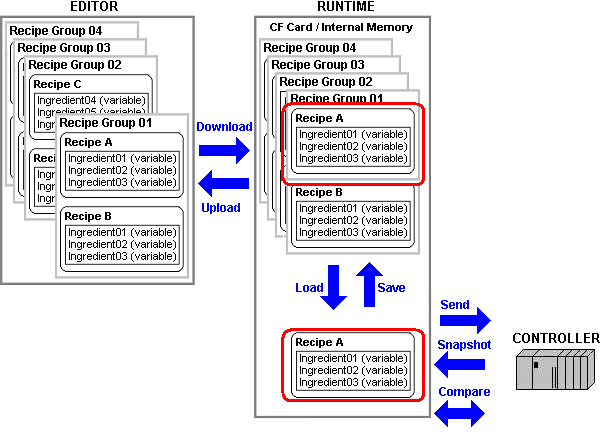
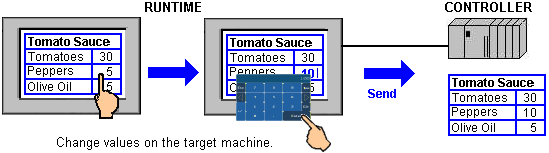
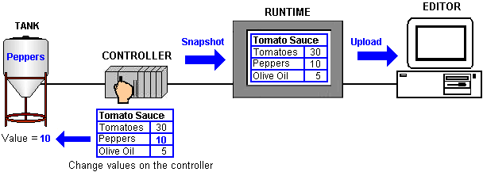

|
|
|
|
|
|
|
|
Before you use the Recipe function, you must understand the terminology used and the relationship between the different recipe components.
The following are some key terms you should know:
Recipe - a collection of variables and values. For example, Great Pizza Works has a Dough recipe group with this list of ingredients: flour, water, yeast, olive oil, and salt. The recipe would specify values for each ingredient. Then, using those ingredients, you can make recipes for thin crust dough, thick crust dough, or pan crust dough. You can create a maximum of 256 recipes in each recipe group.
Recipe Group and Parison Recipe Group - a collection of recipes. Each Recipe Group is uniquely identified with an ID number (ranging from 1 to 65535) and given a name that describes the recipe group. Users are assigned an access level that specifies whether they can or cannot view and edit the Recipe Group. You can create a maximum of 32 Recipe Groups per target. For a Parison Recipe Group, you can use only one block integer variable or one array of an integer type.
Ingredient - individual elements in a recipe group. An ingredient comprises a language specific label, the associated variable, and a minimum/maximum value. Each recipe usually uses several ingredients. In a Recipe Group, you can add a maximum of 1024 ingredients. In a Parison Recipe Group, you can add a minimum of 64 ingredients and a maximum of 400 ingredients.
Recipe Controls and Parison Controls - a set of control variables used with recipe groups and parison groups. A Recipe Control includes the Recipe Group Number Variable, Recipe Number Variable, Recipe Label Variable, Operation Trigger Variable, Operations Lock Variable, Status Variable, Error Variable, and Access Right Variable. A Parison Control includes all the Recipe Controls variables plus the Parison Master Point Tag. For more information, see Section 17.3.5, Setting Up Recipe Controls.
In the Editor, you can create recipe groups, which comprise a set of ingredients and recipes. Recipes are a list of ingredients and values for each ingredient. Each ingredient refers to a variable.
You can refer to the diagram below as an example of how a production line works, from setting up ingredients and recipes in a Recipe Group to sending recipe data to the equipment.

Recipe Group can be best understood using the pizza example. Great Pizza Works creates and controls three different recipe groups: Dough, Sauce, and Toppings. Each recipe group contains similar recipes. In this case, the Sauce recipe group contains a Spicy sauce recipe, a Medium sauce recipe, and a Mild sauce recipe (recipe numbers 1, 2, and 3). All recipes in a recipe group use the same ingredients.
The recipes in each recipe group contain the same ingredients, which vary from recipe to recipe. In the Sauce recipe group, the Spicy, Medium, and Mild recipes contain the same ingredients—crushed tomatoes, olive oil, and peppers—but the peppers ingredient is not actually used in the Mild recipe. In the Editor, you can set up the recipes, recipe ingredient values, and other values associated with each ingredient.
For more information, see Section 17.3.4, Editing a Recipe Group. When you are finished creating the recipe groups and recipes, you can build and download the project.
After the download, a recipe group file that contains recipes is created in the target machine. In Runtime, when you load a recipe group, the ingredients are populated with the values from a single recipe. For production to use the new recipe, the recipe values need to be sent to the equipment. In the pizza example, by specifying (1) as the recipe number in the recipe controls, spicy sauce is loaded to the recipe. The values for the spicy sauce are then sent to the equipment to dispense the correct amounts of tomatoes, olive oil and peppers.
The Recipe function allows you to define and then transmit data to the equipment. Types of data in a recipe may include conditions, machine settings, ingredients, and amounts. The data in the equipment is used to monitor and control the automation process.
In addition to setting up values on the target machine, values can be modified in the equipment. For example, Great Pizza Works realizes that the southern population prefers a spicier version of sauce, while the northern population prefers a less spicy sauce. It decides to alter the amounts of peppers in the recipe. The equipment can directly manipulate the production equipment, in which less peppers is mixed into a batch of spicy sauce and more into a batch of extra spicy sauce.
At runtime, changes to recipes can be made on either the target machine or on the equipment.
When you modify recipe values on the target machine, you can send the updated recipe data to the equipment and you can also upload the recipe group data to the Editor.

When recipe values change on the equipment, you can perform a snapshot of those modified values to update the recipe ingredient values on the target machine. These values can be saved to the recipe group file, and then uploaded to the Editor.
